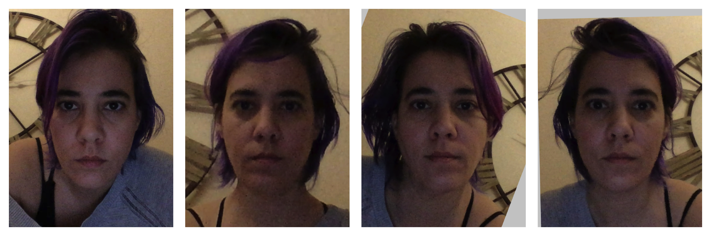
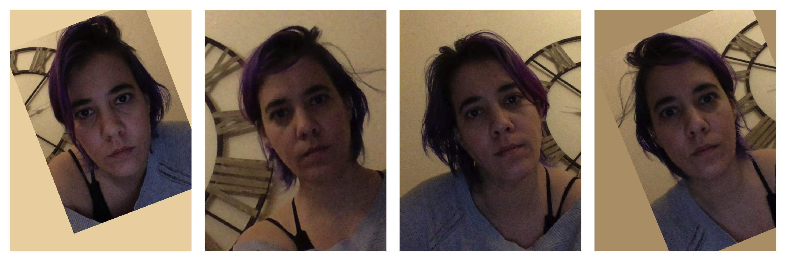
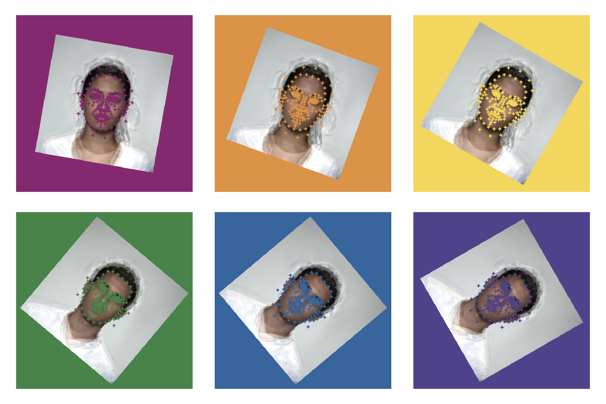

library(webmorphR)
#>
#> ************
#> Welcome to webmorphR. For support and examples visit:
#> https://facelab.github.io/webmorphR/
#> ************
#> Logged in as user 1
#> Your projects are using 25.8 Gb of 100 Gb
#> You have all permissions for project 1
library(magick)
#> Linking to ImageMagick 6.9.11.57
#> Enabled features: cairo, fontconfig, freetype, heic, lcms, pango, raw, rsvg, webp
#> Disabled features: fftw, ghostscript, x11
library(cowplot)Load your images
path <- system.file("extdata/test/", package = "webmorphR")
stimlist <- read_stim(path)The lines are currently plotted as straight lines, but Lisa will add in the proper bezier curves soon.
plot(stimlist, pt.plot = TRUE, line.plot = TRUE)Original Images and Templates
Delete some points
remove_points <- frl_features("imprecise")
stimlist %>%
pt_delete(remove_points) %>%
plot(img.plot = FALSE,
pt.plot = TRUE,
pt.shape = "index",
pt.colour = "black",
line.plot = TRUE,
line.colour = list("black", rainbow(6)),
border.width = 10)
Point removal
Resize
Resizing your images at the start of a chain can make everything go faster if you’re working with very large images, but can make them blurry if you make them too small.
Resized Images
Crop
You can set the new width, height, x-offset and y-offset in pixels (must be > 2) or proportions.
Cropped Images and Templates
Negative offsets or widths larger than the image dimensions add a margin. You can set the colour with fill.
Cropped Images and Templates
Or you can use the patch function to get the median colour from a patch of the image. If you set patch to TRUE, this will default to the top left 10 pixel square, or you can set the boundaries of the patch manually.
stimlist %>%
crop(width = 1.2, height = 1.2,
x_off = -0.1, y_off = -0.1,
patch = c(x1=1, x2=338, y1=1, y2=10)) %>%
plot()Cropped Images with Matched Background
You can use the bounds() function to get the minimum and maximum x- and y-values from a list of templates, then use that to set the cropping. In the example below, the images are cropped so there is 100 pixels of padding around the boundaries, calculated across all images.
lisa <- faces("lisa")
b <- bounds(lisa)
padding <- 100
lisa %>%
crop(width = b$max_x - b$min_x + padding*2,
height = b$max_y - b$min_y + padding*2,
x_off = b$min_x - padding,
y_off = b$min_y - padding) %>%
plot(pt.plot = TRUE, labels = "", nrow = 1)Set each to TRUE to calculate the boundaries separately for each template in the list instead of the full set.
Align
You can align a set of images on two points. By default, these are the first two points in the template, which correspond to the left and right eye in the standard FRL template.
stimlist %>%
align(x1 = 350, y1 = 350, x2 = 450, y2 = 450,
width = 800, height = 800, fill = "grey80") %>%
plot(pt.plot = TRUE)If you have a set of misaligned images and don’t fill in coordinates or dimensions, align() will align to the coordinates and dimensions for the first image. The images below use the Face++ template (they were auto-delineated on webmorph), so points 63 and 81 are the eye points.

Or you can specify the reference image by index or name.

Procrustes Align
You can set the procrustes argument to TRUE to procrustes-align the images and templates.
orig <- plot(lisa, pt.plot = TRUE,
labels = "", nrow = 1)
# any two points that are standard on the image
# should work for procrustes alignment
lisa_proc <- align(lisa, pt1 = 63, pt2 = 81,
procrustes = TRUE, patch = TRUE)
procr <- plot(lisa_proc, pt.plot = TRUE,
labels = "", nrow = 1)
cowplot::plot_grid(orig, procr, nrow = 2,
labels = c("original", "procrustes-aligned"))
Currently, webmorph does not have this capability, but you can download your images and tems, procrustes align them with the R package, save the images and templates, and upload them back to webmorph.
Repeating images
You can use rep() to repeat images in a stimlist. Here, we repeat the faces 3 times each, apply 6 different rotations with different background colours, crop them to the same size, and plot them with 6 different template point colours.
rainbow <- c(pink = "#983E82",
orange = "#E2A458",
yellow = "#F5DC70",
green = "#59935B",
blue = "#467AAC",
purple = "#61589C")
stimlist %>%
rep(each = 3) %>%
rotate(seq(10, 60, 10), fill = rainbow) %>%
crop(500, 500, fill = rainbow) %>%
plot(pt.plot = TRUE, pt.color = rainbow, pt.size = 0.25, labels = "")
Fun things
You can do some more fun things to the images (but not templates) with the {magick} package that is installed with {webmorph}.
image <- stimlist[[1]]$img
imglist <- list(
magick::image_blur(image, radius = 10, sigma = 5),
magick::image_charcoal(image, radius = 5, sigma = 2),
magick::image_oilpaint(image, radius = 10),
magick::image_implode(image, factor = 0.25),
magick::image_implode(image, factor = -0.25),
magick::image_negate(image)
)
labs <- c("Blur", "Charcoal", "Oilpaint",
"Implode", "Explode", "Negate")
lapply(imglist, magick::image_ggplot) %>%
cowplot::plot_grid(plotlist = ., nrow = 2,
labels = labs)